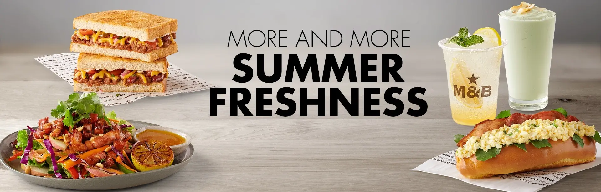

Mugg & Bean is a full-service coffee-themed franchise restaurant chain originating in South Africa. The restaurant chain was founded in 1996 by Ben Filmalter after a visit to a Chicago coffee shop in the early 1990s inspired him to open a similar restaurant in South Africa.
